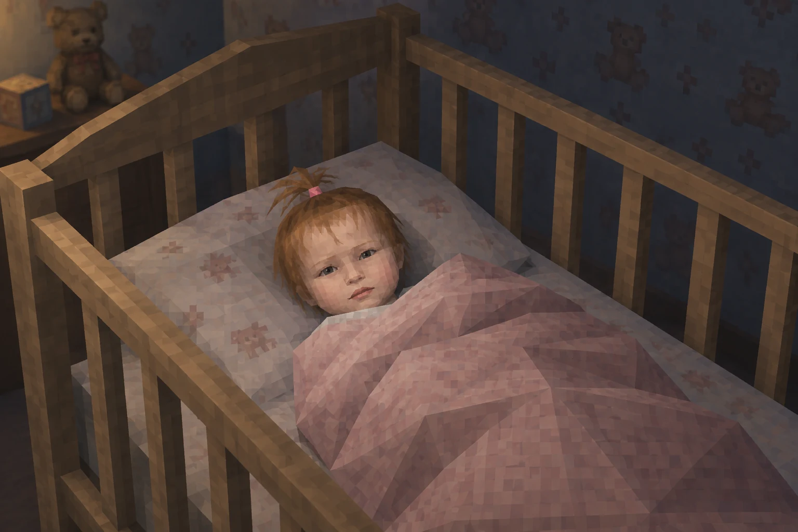
NEW PLAYER CONNECTEDCHARACTER CREATED
В мире появилась Катя.
Баланс игры был нарушен.
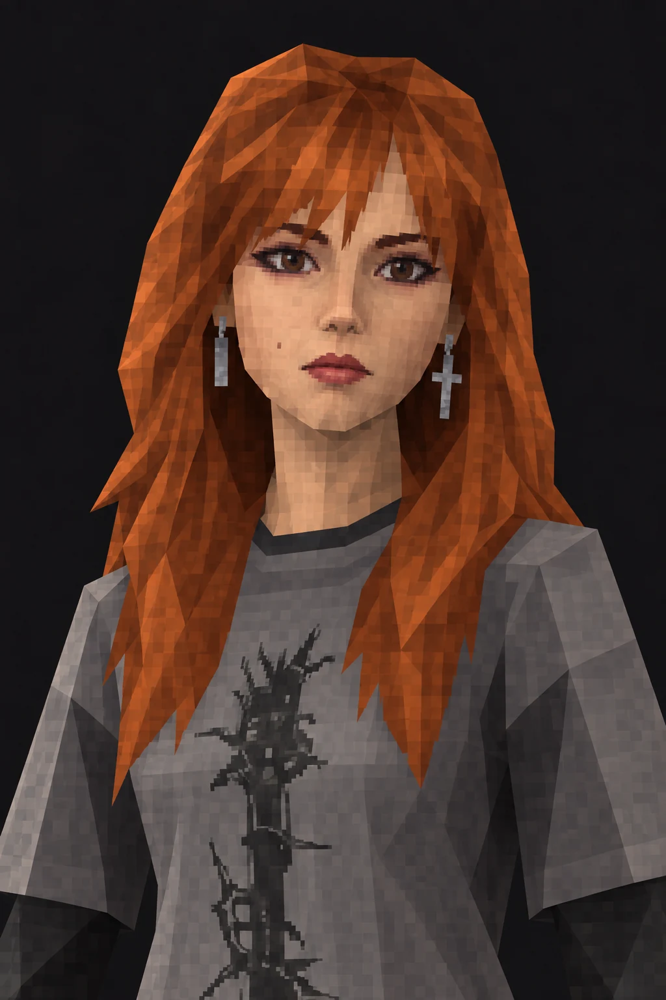
PLAYER_01 / ORIGINAL CHARACTERСегодня родилась
лучшая девочка
на планете
Единственная в своём классе.
Легендарная в любой вселенной.
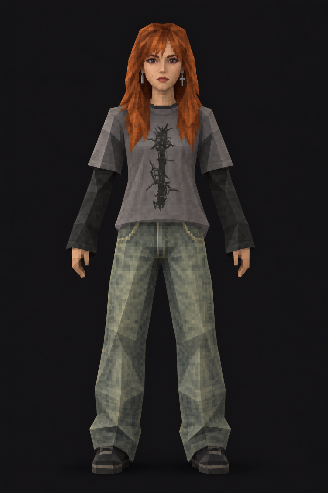
Не удалось загрузить образ. Попробуй выбрать его ещё раз.
Серый лонгслив, свободные джинсы. Базовая комплектация легенды.
DEFAULT. Вид спереди.«Не нормис, а легенда»— описание персонажа

NEW PLAYER CONNECTEDВ мире появилась Катя.
Баланс игры был нарушен.
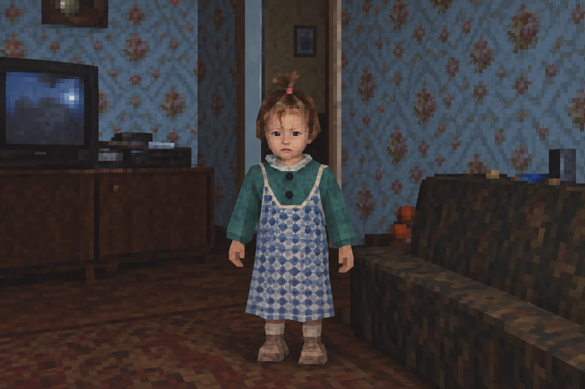
ARCHIVE NOT FOUNDСюжетные материалы частично утеряны.
EVENT_002 / CLASSIFIED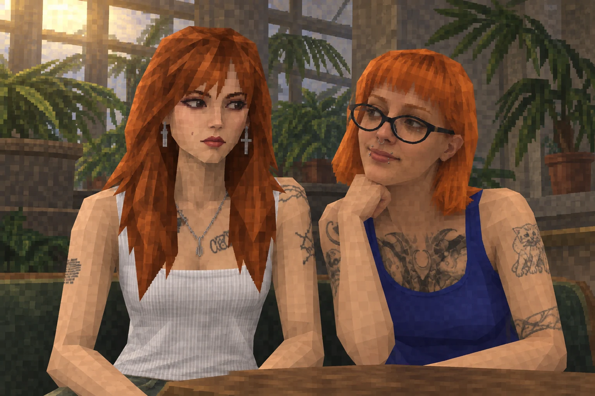
CO-OP MODE ACTIVATEDКатя и Алиса встречаются.
Открыта сюжетная линия «Лучшая дружба».
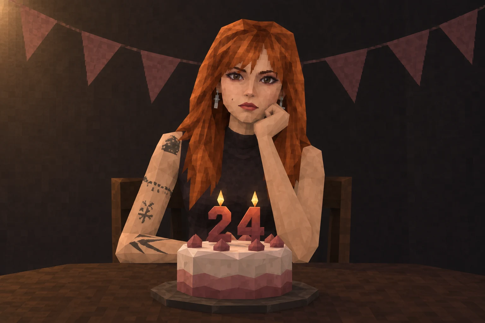
HAPPY BIRTHDAY, PLAYER 01Продолжение следует...
EVENT_024 / CONTINUE…PLAYER_01 / KATYA
Журнал прохождения
ЗАПИСИ 01—06
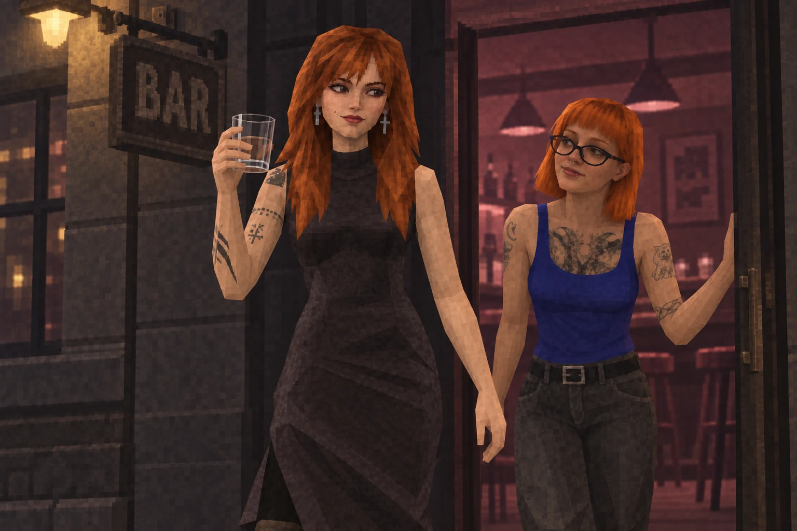
Пережить посещение «Сборов» и успешно покинуть локацию.
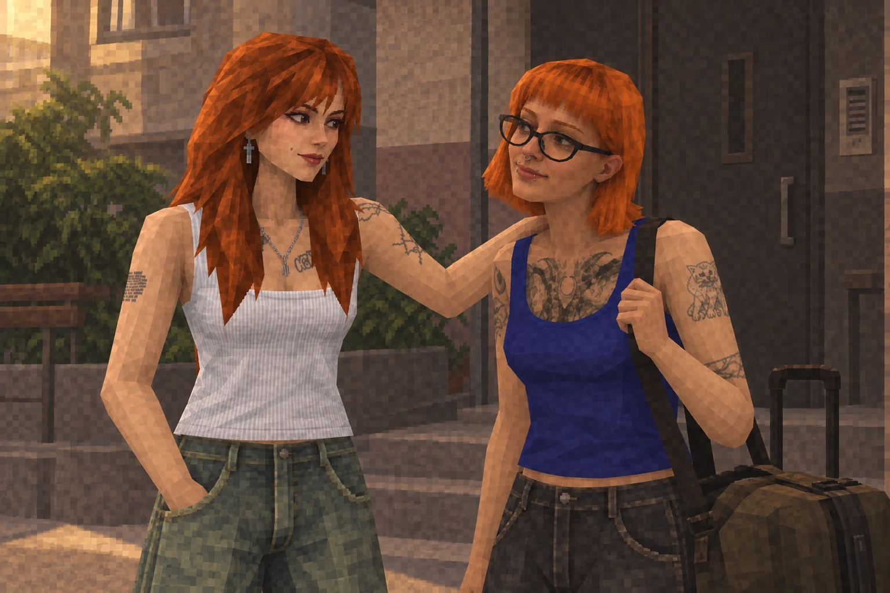
Дождаться возвращения подруги в Россию.
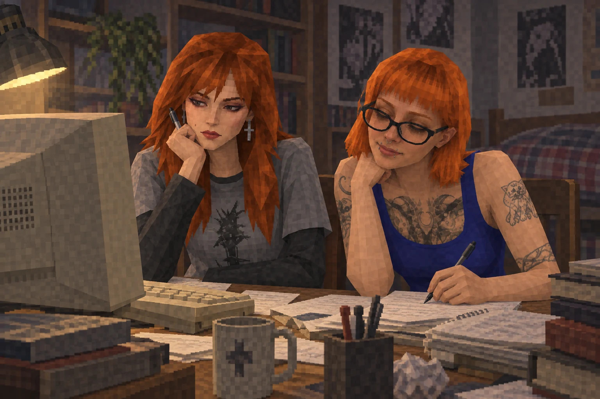
Успешно закрыть очередную сессию любыми доступными средствами.
Призывает союзника, который начинает делать половину твоих заданий вместо тебя.
COOLDOWN: 1 СЕМЕСТР* Статистика приблизительная и может быть оспорена владельцем аккаунта.
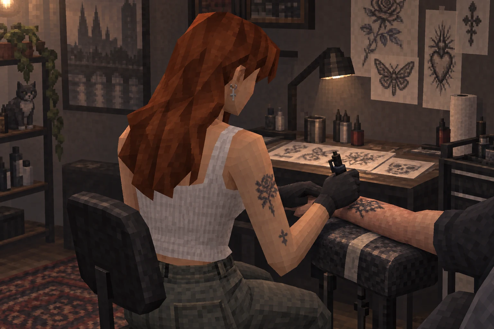
Оставить частичку себя в этом мире.
Некоторые вещи, которые мы создаём, остаются после момента, в котором были созданы.
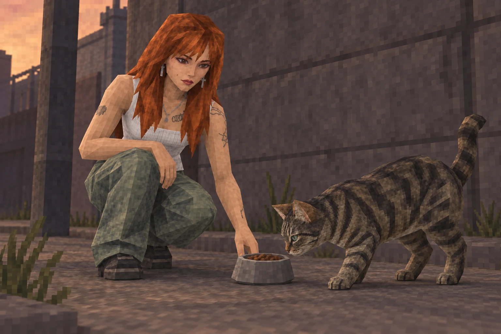
Не пройти мимо того, кому нужна помощь.
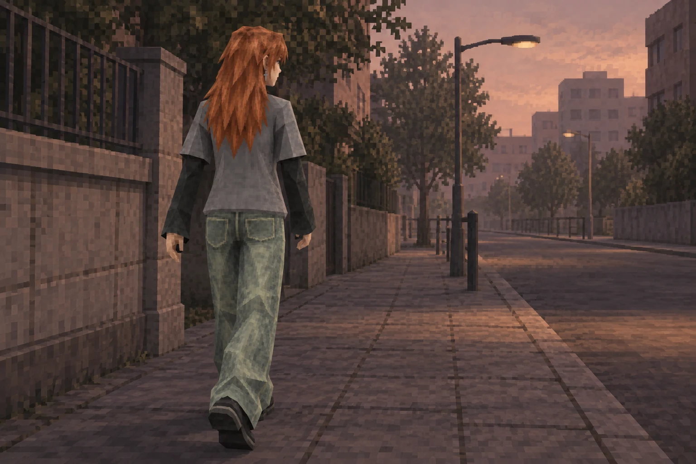
Вы пережили весь пиздец, который игра успела в вас кинуть.
Что бы там ни было дальше — пожалуйста, продолжай в том же духе.
LEVEL UP!
КАТЯ
NEW GAME YEAR STARTED
♥
MAIN STORY CONTINUES...